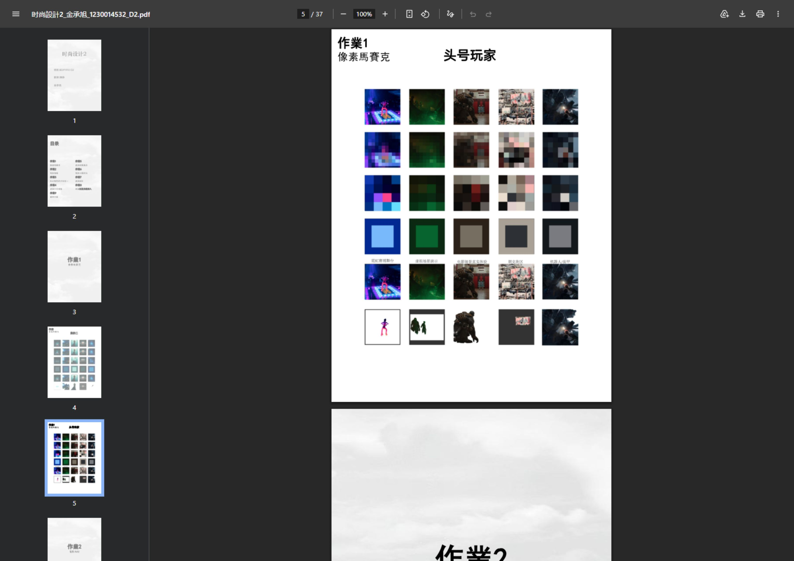
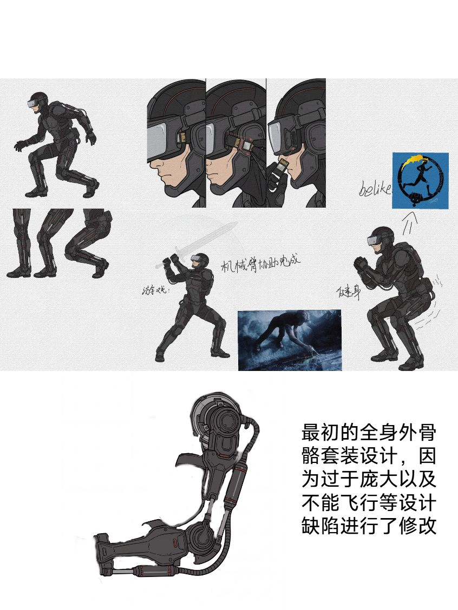
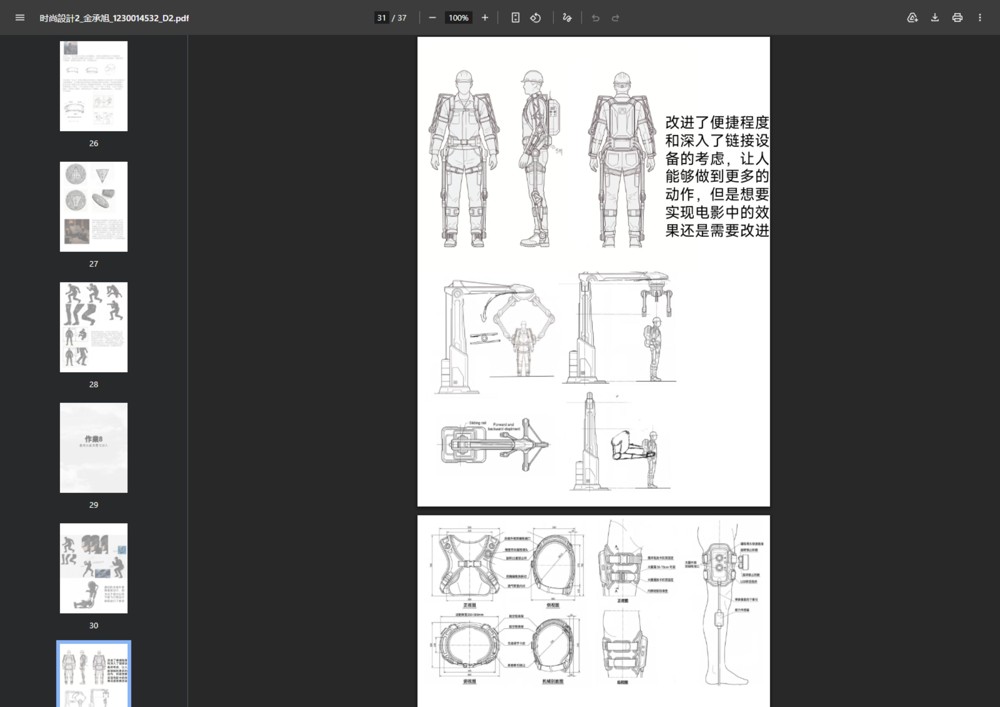
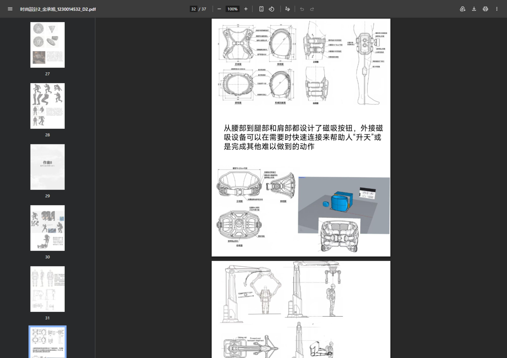
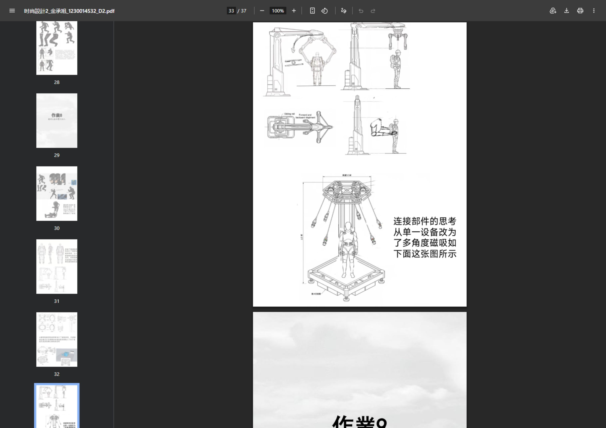
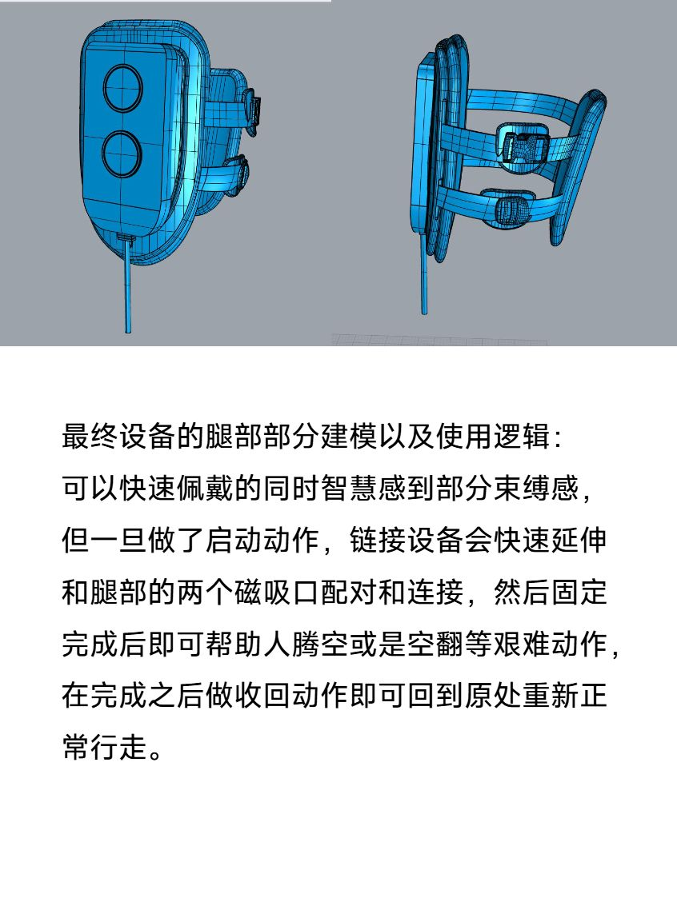
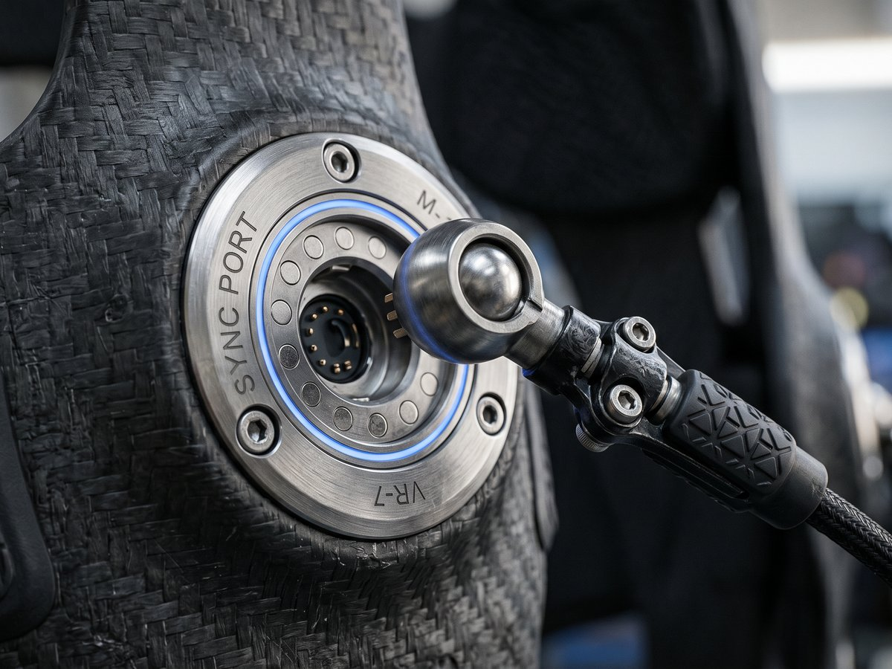
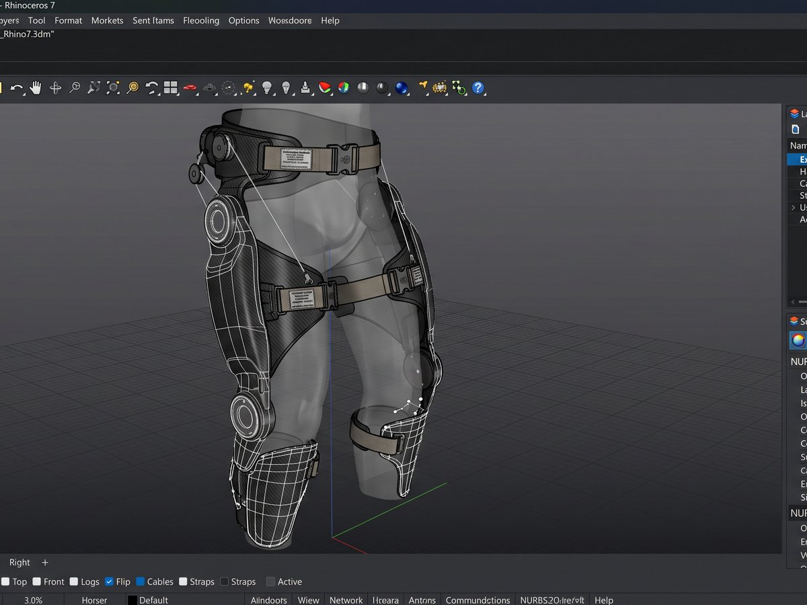

1电影调研
→
2道具分析
→
3概念发散
→
4方案收敛
→
5草图迭代
→
63D建模
→
7最终方案
PHASE 01
电影调研 · 建立素材基础
以《黑豹2》和《头号玩家》两部科幻电影为研究对象，通过像素马赛克分析和电影海报研究，提取两部影片的视觉语言与道具设计风格，为后续道具选择与概念延伸奠定分析框架。

像素马赛克 —《头号玩家》
像素马赛克分析
对《黑豹2》与《头号玩家》关键帧进行像素化处理，提炼色彩构成与视觉重心，识别两部电影在道具设计上的差异化策略——黑豹偏向有机形态与非洲未来主义，头号玩家强调机械结构与赛博朋克质感。
电影海报研究
分析电影海报的构图逻辑与信息层级，理解科幻类型片的视觉传达规范，为后续产品视觉呈现建立参考框架。
场景叙事创作
创作原创故事场景《头号玩家：红灯笼离线中》——设定在春节的叠楼区，探讨"数字斋戒"情境下的人际连接。叙事构建帮助深入理解电影世界观与道具在真实情境中的使用逻辑。
PHASE 02
道具分析 · 确定设计切入点
系统研究《头号玩家》中的核心道具，从多视角分析道具形态、功能逻辑与使用场景。关键洞察：现实 VR 设备受"地面限制"——用户在虚拟世界自由飞行，身体却被困在地面——这种沉浸感断层正是设计机会点。
道具多视角拆解
从正视图、侧视图、顶视图等多角度拆解道具形态，建立对道具三维结构的完整认知，为后续三维建模提供形态参考。
道具 → 现实产品映射
将电影道具的功能逻辑映射到现实产品需求。核心发现：VR 用户需要的是在物理空间中自由移动的能力，而非更多的虚拟反馈。
三种使用状况
定义产品的三种核心使用场景——单人训练、多人竞技、康复辅助。从不同情境反推功能需求，确保设计的通用性与场景适应性。
PHASE 03
概念发展 · 从发散到收敛
运用 AI 生图工具进行外骨骼概念发散，生成多方向方案后进行系统性评估。核心收敛逻辑：从"能做多少"转向"用户真正愿意穿戴多少"。
"最初的全身外骨骼套装设计，因为过于庞大以及不能飞行等设计缺陷进行了修改——改进了便捷程度和深入了链接设备的考虑，让人能够做到更多的动作，但是想要实现电影中的效果还是需要改进。"
—— 设计笔记

迭代一 · 全身外骨骼套装（因体积过大被否决）

迭代二 · 优化便携性与连接机制

迭代三 · 腰/腿/肩部磁吸按钮概念

迭代四 · 多角度磁吸连接方案
道具设计初稿
基于道具分析结论进行初步设计，将电影中的视觉元素转化为可实现的产品形态语言。此阶段仍以"酷"为优先级，尚未充分考虑人体工学约束。
草图迭代与方案收敛
四轮迭代的核心决策链：全身外骨骼（否决·体积过大、无飞行能力）→ 便携化减重 → 引入磁吸连接机制 → 聚焦腰腿部核心模块。每一轮都在"可实现性"与"体验效果"之间寻找平衡点。
PHASE 04
最终方案 · 磁吸悬浮系统
从庞大的全身外骨骼收敛至聚焦腰腿部的磁吸悬浮轻量化方案。腿部双磁吸接口支持设备自动延伸配对，腰部磁吸扩展坞支持多角度外接——在便携性、功能性和穿戴体验之间找到了最优解。

最终腿部模块 · 使用逻辑与建模

磁吸连接端口 · 工程细节特写

Rhino 7 视口 · NURBS 曲面建模

技术规格
- 腿部双磁吸接口 · 启动后自动延伸配对
- 快速佩戴绑带系统 · 即时穿戴
- 腰部磁吸扩展坞 · 多角度外接
- 碳纤维轻量化主体 + 钛合金连接器
- Rhino 7 复杂曲面建模
- KeyShot 产品级渲染
- 3D 打印原型验证人机尺度
OUTCOME
设计反思
本项目的核心收获不在于最终渲染图的视觉效果，而在从虚构道具到现实产品的完整推导能力。电影调研不是装饰性的灵感板，而是建立设计约束与机会点的分析工具；概念发散需要 AI 工具的加速，但收敛依赖设计师的判断力。
全身外骨骼的浪漫想象最终让位于腰腿部磁吸方案的务实选择——这不是妥协，而是产品设计最核心的能力：在约束中做出正确的取舍。
×